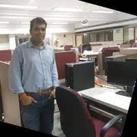

|  |
Samarth TrikannadAutomotive Engineer Asping Web Developer. I love travelling and hanging out with friends. Interested photography. Sport lover(cricket, Badminton,Table Tennis) |
Automobile Engineering @ B.V.B.C.E.T, India.
Having an experience of 8 years in Automotive Design. I have been a part of different teams and projects, that design the automotive plants for automotives throughout the world. My area of expertise has been Fixture Design, Technical documentation, Quations. As a part of my job I have worked on several Software such as Catia, Unigraphics and others. I have trained and helped a number of my colleagues during this course.
| Dates | Work |
|---|---|
| 2012 | Resource Infrastructure Managment Pvt. Ltd. |
| 2013-2016 | CSM Software Pvt. Ltd. Now known as Solize Corporation. |
| 2016-2019 | Allygrow Technologies Pvt. Ltd. |
| Career span | 8+ years in IT and 6 months in Customer Service |
During all this, the programming that enables the CAD software to perform the task they are meant to do have always fascinated me. Now, Immigrating to Canada has given me an opportunity to change my career direction. I want to work on the sector that interests me the most.
|
|